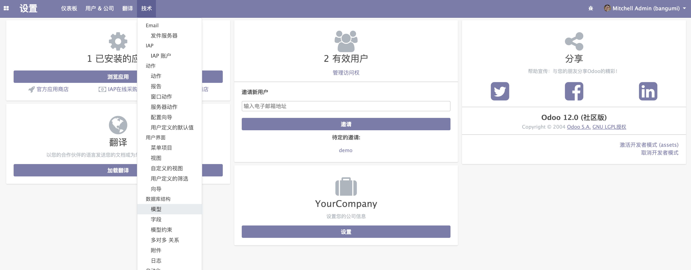

定义数据模型
进入到 bangumi 应用的开发目录。
为了保证项目结构，我们首先删除 models 下的 models.py，新建一个 bangumi.py 来编写第一个模型。
models
├── __init__.py
└── bangumi.py
在编写 ORM 模型之前先讲一下 Odoo 在定义模型时常用的三个模块。
models
包含 Model 基础类，用于定义 ORM 模型。fields
包含模型定义时使用的基础字段，例如 fields.Char、fields.Integer 和 fields.Boolean 等等。api
包含了数据库环境 Environment 类和一些常用的模型函数装饰器例如 api.multi、api.one 和 api.model 等等。
我们先在文件头部引入这三个模块，然后开始定义第一个模型。
from odoo import models, fields, api
class Bangumi(models.Model):
_name = 'bangumi.bangumi'
_description = 'Bangumi'
我们的模型类的类属性定义了，_name 和 _description 分别是这个模型类的名称和描述。
定义 _name 是要遵守一个不成文的规定，格式一般为 {addon_name}.{model_name} 其中 addon_name 为你的应用或模块的名字，model_name 为模型的名字，例如： project 模块中的 Project 模型的 _name 为 project.project，hr 模块中 LeaveReport 则为 hr.leave.report，以上均参考至官方应用中的模型。
接下来定义模型字段，先定义名称、总集数、当前已看集数和评分字段。
class Bangumi(models.Model):
_name = 'bangumi.bangumi'
_description = 'Bangumi'
name = fields.Char(string='Name', required=True)
total = fields.Integer(string='Total', required=True)
already_seen = fields.Integer(string='Already seen', default=0)
score = fields.Float(string='Score', required=True, default=0.0)
接下来会简单介绍一下这个数据模型在数据库表中会有什么样的对应关系。
我们在定义 name 字段使用了 fields.Char 相当于在 「bangumi.bangumi」所对应的数据库表 「bangumi_bangumi」定义了一个 name 的列，类型为 varchar，用于存放字符串，并且使用 required=True，将该列设置为不可为空。另外两种 fields.Integer 和 fields.Float 也是类似的道理。其次每个 field 的 string 属性是用于在视图中做字段名称的显示，同时会在数据库定义中作为 COMMENT 来解释字段的意义。
在字段定义中我们还利用了 default 属性设置了数据在创建时的默认值。
⚠️ 这里要注意的是我们在 ORM 设置的 default 值并不会写入数据库表的定义中，如果在数据库中直接插入数据，这个默认值不会生效，必须要通过 ORM 的方式写入数据，默认值才会生效。
定义好模型后我们需要在 models/__init__.py 引入这个类或这个类所在的 py 文件。
from . import bangumi
然后我们需要重启我们的 Odoo 然后进入到应用中点击右上角的按钮并选择「升级」。
接下来如何验证我们的模型是否生效呢？当然可以通过查询数据库的方式，但是 Odoo 提供了另一种方式。
进入「设置」页面，激活「开发者模式」后，点击「技术」菜单并选择「数据库结构」下的「模型」进入模型列表。

搜索 bangumi 就可以看到我们定义的模型，点击可以进入查看模型定义的详细信息。
可以从这个表单看出，除了我们自己定义的模型外，Odoo 还帮我们自动生成了一些常用的字段，例如：create_date、create_uid 和 write_date 等，这些字段可以直接使用，所以需要记住这个特性，防止我们在定义模型时重复定义这些字段。